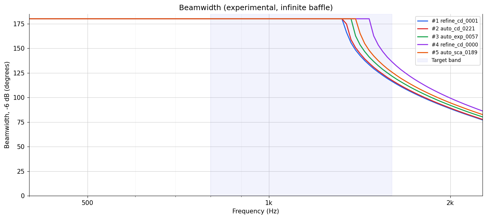

Horn Simulation
An open-source pipeline for designing horn-loaded loudspeakers. You give it a frequency band and a driver database. It generates horn shapes, solves them with finite element acoustics, couples each one to the drivers and ranks the pairs.
What it does
You give a target band, for example 800 to 1600 Hz. The pipeline screens the drivers in a database, picks throat sizes that suit them, and builds a grid of horns from seven profiles:
conical,exponentialandtractrix;hyperbolic: a Salmon hypex with T = 0 (catenoidal);os: oblate spheroidal;scaled_tractrix: a tractrix contour scaled to the length (once misnamed Le Cleac'h; it is not one);cd: an exponential throat joined smoothly to a tangent cone.
A one-dimensional Webster model scores every horn against every driver in milliseconds. A short list goes to the 3D solver: gmsh meshes, a FEniCSx Helmholtz solve, and a mouth that radiates into an infinite baffle. Each solved horn is coupled to each driver through its Thiele-Small parameters and its front chamber. A short refinement step then tries nearby dimensions of the best design.
Pairs that break a hard limit (ripple, excursion, power, size, the driver's usable band, a minimum level) are rejected, and the report says by how much. The rest are ranked by a weighted sum of four terms: sensitivity, in-band ripple, bandwidth extension past the band edges, and horn size. The weights are fixed exchange rates. With the defaults, 1 dB less ripple is worth 2 dB of sensitivity, one more octave of extension is worth 6 dB, and size does not count unless you give it a weight. Scores within 0.02 are marked as near ties.
Nextflow runs each step in a Docker container and solves frequency bands in parallel. Each run gets its own folder with a manifest of the source, inputs and container images.
The front chamber
Between a cone driver and a small throat there is a volume of air: the open cone closed by the adapter plate. It acts as a low-pass filter. When a driver record gives no volume, the pipeline estimates it (139 cm3 for the 18Sound 6NMB420) and marks the result front_chamber_estimated. The real adapter will differ, so give the measured volume as front_chamber_volume_cm3 when you have it.
This changes answers. Earlier versions treated the throat as an ideal area transformer and chose a hyperbolic horn with a 65 mm throat for 800 to 1600 Hz, at about 1.5 dB ripple. With the estimated chamber, that same horn gives about 6.4 dB ripple and fails the 6 dB limit. The current search picks a larger throat instead.
Example 1: 800 to 1600 Hz, automatic search
A short auto-mode run over the seven curated drivers. Five passed the driver screen. The Webster screen scored 230 geometries and 1,150 driver and horn pairs; three went to FEM (one cd, one exponential, one scaled tractrix), plus two refinement trials. The winner is an 18Sound 6NMB420 cone driver on a cd horn.
The level includes the estimated front chamber. Without it the same horn gives 3.23 dB ripple and 102.33 dB. Both Peerless compression drivers were rejected: the band is outside their rated usable band, and one also exceeds Xmax at 2.83 V by 0.06 mm.

Ranking
All five finalists use the 6NMB420. The first three are within 0.02 and are near ties.
| # | Horn | Profile | Throat R (mm) | Mouth R (mm) | Length (mm) | Score | Ripple (dB) | Mean (dB) |
|---|---|---|---|---|---|---|---|---|
| 1 | refine_cd_0001 | cd | 36.06 | 88.71 | 117.91 | 0.791 | 2.1 | 104.1 |
| 2 | auto_cd_0221 | cd | 36.06 | 88.71 | 107.19 | 0.785 | 2.4 | 104.1 |
| 3 | auto_exp_0057 | exponential | 36.06 | 88.71 | 107.19 | 0.772 | 2.7 | 104.2 |
| 4 | refine_cd_0000 | cd | 36.06 | 79.84 | 107.19 | 0.758 | 3.4 | 103.6 |
| 5 | auto_sca_0189 | scaled_tractrix | 36.06 | 88.71 | 160.78 | 0.752 | 3.7 | 103.6 |
Refinement used its whole budget and stopped with the mouth on the upper edge of its search range, so a larger budget may find a different design. This run does not show a global optimum.
Open the full generated report (3.4 MB, self-contained) or read the worked example, which walks through the same run. Run 20261117T005341Z-14e497b7, source revision 51427ee.
An impossible request: at least 140 dB
The same band with --min_output_db 140 at 2.83 V and a smaller budget (two FEM horns, one refinement trial, 41 frequencies). No pair can do this, so the report ranks nothing. Refinement starts from the least infeasible design instead of the best feasible one. The rejection table says what failed and by how much:
| Reason | Pairs | Closest miss | Largest excess |
|---|---|---|---|
| Level below the minimum | 15 | 39.69 dB | 46.92 dB |
| Ripple above 6 dB | 7 | 0.14 dB | 8.58 dB |
| Sd / throat area above 10 | 6 | 5.50 | 15.66 |
| Outside the driver's usable band | 6 | ||
| Excursion above Xmax | 3 | 0.05 mm | 0.05 mm |
| Diaphragm larger than the mouth | 3 |
The best pair was still about 40 dB short. A pair can fail several limits, so the counts add to more than 15. Run 20261117T044425Z-a28f31bf; open its report.
Example 2: 6NMB420, 320 to 5000 Hz, 300 mm length limit
A wide band with a hard length limit, for the 8 ohm 18Sound 6NMB420. The archived result is an oblate spheroid (OS) horn. A broad 700-geometry search found nothing within the ripple limit; a focused 175-geometry search with a narrower throat did. In total 15 geometries received full FEM sweeps.

Open the archived report or browse the example files, including the STEP file, response data and manifests.
What a run gives you
An auto run writes a self-contained HTML report and the files behind it. OUTPUTS lists every file and column.


- Rejection margins.
auto_rejections.jsoncounts each reason a pair failed and gives the closest miss and the largest excess, in the reason's unit. - Builder profiles.
profile_NN_<horn>.csvgives the wall radiusr_mmagainst axial positionz_mmfrom the throat, for each top horn. - Coupled response.
coupled_NN_<driver>_<horn>.csv: level, electrical impedance, excursion, input and acoustic power, and group delay per frequency. - Geometry. A STEP file of the air passage at true size in millimetres. No walls, mounting or adapter.
- Directivity.
directivity_<horn>.csv, 0 to 90 degrees. - Provenance.
ranked_results.jsonwith the scoring formula, weights and the origin of every search bound;search_audit.jsonwith every refinement step;manifest.jsonwith source and input hashes.
Validation
Each check has a frozen record and a script. Failures are kept and listed; no tolerance has been loosened to get a pass. The full index with records and scripts is VALIDATION.
Measured horn input impedance
The FEM model was compared with John Post's 1994 measurements of an exponential horn's input impedance. The limits were fixed before the solver ran. Nothing was fitted or shifted. Over 1 ≤ ka ≤ 5 (about 201 to 1,007 Hz) the finest mesh is within 0.497 dB in magnitude and 1.873 degrees in phase. Both mesh refinement checks passed.

Other software and other measurements
| Comparison | Result |
|---|---|
| Interior FEM and motor model against Boundary Lab (Julia), shared meshes | Pass, relative difference below 9e-13 |
modal_baffled mouth against the MMM mode-matching toolbox, one horn, 800 to 1600 Hz | Pass: 0.017 dB impedance, 0.013 dB pressure |
flanged_piston mouth against the same reference | Fail on throat impedance (1.05 dB, 5.7 degrees); on-axis pressure within 0.40 dB |
| Webster screen against openwind, same physics, 7 profiles, 5 cases | Pass, 35 of 35 |
| 3D FEM against openwind and the Webster model, conical and exponential | Fail at the frozen low-ka limit (0.60 and 0.40 dB median); a difference of up to about 1.5 dB between ka 0.5 and 1.5 is not explained |
bempp-cl horn in a finite baffle against modal_baffled FEM | Throat impedance passes 5 of 5; directivity and on-axis level fail, dominated by baffle diffraction |
| Hajicek and Neely conical horn reflectance standard, unfitted | Fail on the frozen gates |
| Measured pipe impedances with wall losses | Partial, 237 of 299 curves |
| Webster screen keeps the best FEM designs, fixed grid, four bands | Pass, zero score regret |
| Hornresp | Not run (Windows only); input sheets are in the repository |
Details: cross-software comparisons, radiation, current status and open work.
Run it yourself
You need Docker, just, Nextflow 24.10 and Java 17 to 22. The quick start has the details.
git clone https://github.com/timini/horn-simulation.git
cd horn-simulation
just build
# Give it a band and a driver database; it derives the geometry
just run-auto --target_f_low 800 --target_f_high 1600 \
--drivers_db data/drivers-curated
# Find the run and open outputs/auto/report/auto_report.html inside it
just latest-runAdd limits such as --max_length 0.1, --max_mouth_radius or --min_output_db to constrain the search. Use just run to simulate one horn, from dimensions or your own STEP file. USAGE lists every command and parameter.